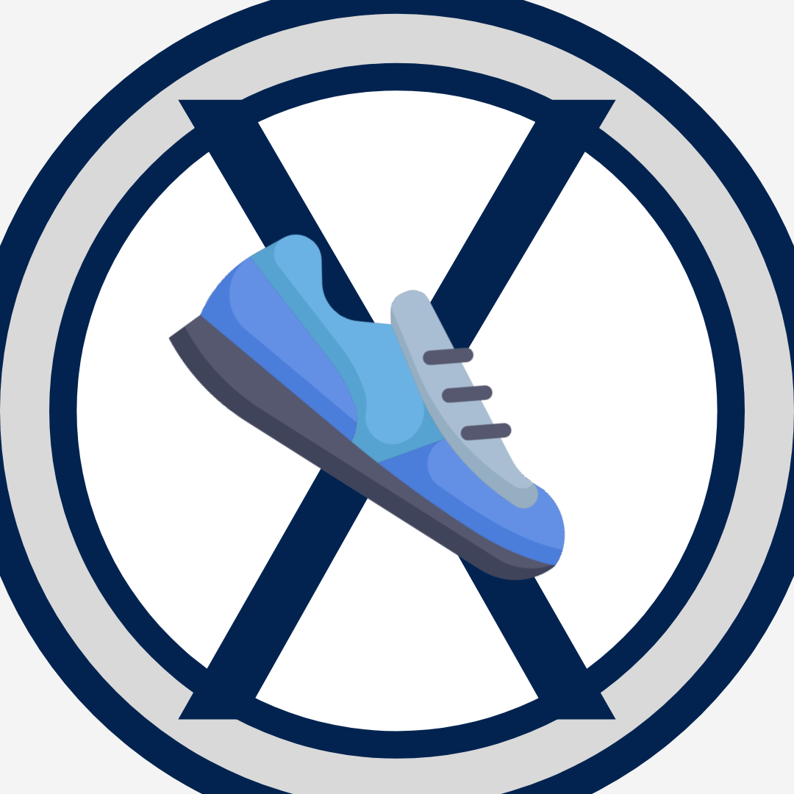

X-Moves Mobile App StFX Moves for Physical and Mental Health  Created by Kennedy Nangle with The Frank McKenna Centre for Leadership at StFX University and developed by Amisoft Consulting. Visit the X-Moves project's microsite here.